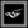

De: La Frikipedia, la enciclopedia extremadamente seria.
De: La Frikipedia, la enciclopedia extremadamente seria. De: La Frikipedia, la enciclopedia extremadamente seria.
| De la serie Saint Seiya: | |||
| Thanatos | |||
| |||
| nacimiento | no me acuerdo | ||
| muerte | es inmortal o sea vuelve a vivir aunque lo maten | ||
| ocupación | recolector de almas y líder de los muertos | ||
| nacionalidad | Griego | ||
| malo_bueno | malote | ||
| atentados | muchos | ||
| religion | el es un dios | ||
| notas | quiere matar y castrar a seiya | ||
«Nadie molesta al señor Hades»
~ Thanatos Diciendo su típica frase de malo ayudante
«MUERE SEIYA»
~ Thanatos Tratando de salvando al mundo de un mal inescesario
«Te pateare el trasero»
~ Manigoldo Peleando contra Thanatos
«Κάθαρμα πεθαίνουν μια για πάντα και έτσι είναι σε θέση νακυριαρχήσουν στον κόσμο»
~ Thanatos Diciendo su típica frase de malo misogino.
Thanatos es el dios de la muerte y hermano del sueño en mitología griega. Es un dios maligno a las ordenes de Hades que desea gobernar al mundo junto con su hermano gemelo.
Es el hijo de de la noche es demuestra su gran interés por las cosas oscuras o dark, además es el hermanio gemelo de Hypnos, el sueño.
Cuándo era chaval todavía, Thanatos no sabía que se convertiría en unos de los dioses más malignos y guarros de toda la mitología. Fue fácil de aceptar para él, ya que deseaba hacer mierda a todos sus enemigos y alardearle a su hermano el somnoliento que desde antes le estaba rompiendo las bolas canicas por ser un simple pendejo webón. Al ser idéntico a su hermano en todos los aspectos se tiño el pelo plateado para no parecer un metrosexual resentido. Se cree que es el inventor de la Eutanasia.
Es un maníaco megalomano dispuesto a masacrar a cualquiera con tal de lograr sus objetivos. Siempre ha sido un peleador nato que lanza Genki damas de color rosa. Tiene unas terribles ganas de tirarse a Pandora y supones que ese es su más oscuro secreto,aunque se rumorea que es bisexual. Según su médico privado, él cual no rebelaremos su nombre por seguridad, Thanatos tiene unos extraños ataques nerviosos que corromperían su estado mental haciendo lo ver como un loco desalmado roba almas.
Los espectros del inframundo fueron liberados y Thanatos se volvió un loco maniático de gran inteligencia nunca nadie lo supero hasta que apareció un homosexual con armadura que pudo encerrarlo pero no por mucho tiempo, ya que pronto volverá y e vengara de quienes lo encerraron. Por lo que se ve es un sirviente de Hades y a su causa aunque parezca que tiene más inteligencia que su amo su poder es insignificante al lado del de su señor. Tiene la apariencia de un tipo joven que mide como dos metros y es ojos celeste como todo ser maligno que lanza bolas espirituales como las Genki Dama.
En una pelea con Kratos, Thanatos se transforma en un demonio enorme monstruo comehombres que trata de matar a Kratos pero no lo logra solo mata al hermanastro de Kratos, Deimos, y lo vuelven a encerrar en la misma cueva mugrienta donde estuvo siempre. Eso sí tuvo que poner un esfuerzo de madres para encerrarlo.
Aquí tiene un enfrentamiento con Howl, el hombre pájaro, para saber quién era el más poderoso hechicero. Este conflicto ocurrió en las calles de Catalunya y en el palacio judicial, aunque todo esto quedo en destrozos y un increíble aumento de los precios del rábano, todo termino bien pero los contendientes terminaron con una apariencia de pordioseros.
Para aumentar el raiting de su programa había que matar a Lupin III, lo cual se le complico un poco, ya que el loco amanerado usaba armas de fuego y granadas pero todo se arreglo con unas 5 bolas espirituales y tres puñetazos en la cara de mono de Lupin III lo inestabilizaron un poco pero el cabrón no se rendí y mando a llamar a cinco tipos para que lo ayudaran, todo fue inútil, Thanatos los fajo a todos con una golpiza tremenda.
Mientras jugaba un fuego de Ajedrez contra Hypnos apreció de la nada Manigoldo de Cáncer preguntando por Thanatos, luego de que el afeminado de Hypnos se retirara, Thanatos le lanzo las piezas de Ajedrez a Manigoldo donde casi lo mata pero justo apareció el patriarca para salvarlo, esta pelea todavía no concluye así vas a tener que esperar para saber si Thanatos se muere de una vez.
A Thanatos le habían cambiado los tiñes de cabello dándole un color raro, llenó de furia quiso cortarle las bolas al barbero que saco su navaja para defenderse, fue inútil, ya que una simple navaja no puede vencer a un dios de la muerte deprimido. Al final Thanatos le corto la yugular al barbero retirándose muy complacido por sus actos, se fue a tomar una copa al bar más cercano.
Fue vuelto a encerrar junto con otros 108 webones en una montañita de 2x2. Luego se liberaría y lograría matar finalmente a Seiya y así poder dominar al mundo pero luego de muchos años se volvería loco porque no tenía a quién torturar o matar, ni siquiera su hermano le hablaba ya. No dudo más y revivió a Seiya para matarlo y volverlo a revivir día tras día como un pasatiempo.
Al ver que ya no podía ganarle a nadie decidió dejar de pelear y a ganar dinero como empresario, al ser un dios en medio siglo formo un imperio inversor que movió mundos se dice por ahí que las grandes empresa multinacionales japonesas y griegas son de este gran personaje y si lo haces enojar con un solo toque en tu hombro conocerás el poder de la muerte.
Siempre se ha llevado bien con él y siempre trama sus panes malignos para dominar al mundo con él.Sera que tienen entre sí una relación incestuosa pero nadie ha podido probarla. Siempre ha subestimado sus poderes, además tienen gustos diferentes mientras que Thanatos toca el arpa su hermano toca el flautín otra diferencia es que su hermano es rubio ojos color miel, Aunque los dos midan como dos metros. Hablan poco entre sí ya que si Hypnos habla mucho Thanatos se duerme del sueño.
En estos momentos Thanatos debe estar recolectando almas o tomando un té de hierbas para que se le calmen los nervios. A dejado de matar gente sin sentido y esta buscando alquilar un vientre, no pregunten porque, directamente esta más al pedo que antes y se espera que haga otra guerra santa cada cien años en nombre de su señor Hades si no su vida no tendría sentido en lo absoluto.
|  Dioses de la Antigua Grecia |
|---|
|
Ἀφροδίτη · Ἀπόλλων · Ἄρεως · Αρτεμιςαρ · Ἀθηνᾶ · Χρόνος · Δημήτηρ · Διώνυσος · Γαῖα · ᾍδης · Ἥφαιστος · Ἧρα · Έρμῆς · Ἑστία · Ποσειδῶν · Προμηθέας · Περσεφόνη · Οὐρανός · Ζεύς |
| |
Afrodita • Aiakos • Aioria • Aioros • Aldebarán • Apolo • Caballeros dorados • Camus • Death Mask • Dohko • Exclamación de Atena • Generales Marinos • Hades • Hyōga • Hyperión • Hypnos • Ikki • Kagaho • Kanon • Milo • Minos • Mu • Poseidon • Radamanthys • Saga • Saint Seiya: The Lost Canvas - Hades Mythology • Saori • Seiya • Shaka • Shion • Shiryū • Shun • Shura • Síndrome de Saint Seiya • Tenma • Thanatos • Trío Dark |
Autor(es):